논문 accept 받고 나서 가장 피곤한 게 뭔지 아시는 분들은 안다 — 카메라레디 제출 끝나면 곧바로 컨퍼런스 포스터, 발표 영상, 블로그 포스트를 손으로 만들어야 한다. 연구 자체보다 이 “디세미네이션(dissemination)” 쪽에 시간이 더 드는 게 현실이다.
Microsoft Research가 이 문제를 아예 하나의 파이프라인으로 묶었다. 논문 PDF 한 부를 넣으면 포스터, 발표 영상, 블로그글 세 가지가 한 번에 나오고, 세 개 전부 서로 사실이 일치하며, PowerPoint나 Word에서 다시 열어서 수정할 수 있다. 시스템 이름은 ResearchStudio-Reel (arXiv:2607.04438).
이 글에서는 이 시스템이 기존 자동화 도구들과 뭐가 다른지, 왜 포스터 품질이 원저자가 만든 것보다 높은 평가를 받았는지 정리한다.
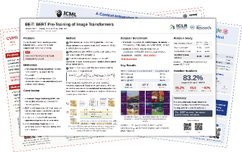
Figure 1(a): Paper2Poster가 만든 포스터 예시. 편집 가능한 PowerPoint로 출력된다.기존 자동화의 세 가지 근본적 한계
저자들은 기존 paper-to-poster, paper-to-video, paper-to-blog 자동화 연구를 훑어보며 반복되는 세 가지 문제를 뽑는다.
G1 — 중복 추출(Isolated extraction). 지금까지의 자동화 도구들은 각자 따로 논문을 파싱한다. 포스터 만드는 시스템이 그림을 크롭하고 캡션을 정리하면, 영상 만드는 시스템이 또 같은 작업을 처음부터 반복한다. 결과적으로 포스터에 들어간 Figure 3번과 블로그에서 인용한 Figure 3번이 서로 다른 그림인 경우가 생긴다.
G2 — 편집 불가(One-way renders). 대부분의 도구가 PDF, MP4, HTML 같은 최종본만 내보낸다. 작동은 하는데, 저자가 “이 문장 좀 바꿔야겠다” 하면 전체 파이프라인을 다시 돌려야 한다. PowerPoint에서 열어서 고치는 게 안 된다.
G3 — 점수 기반 품질 게이트(Soft quality gates). VLM(visual language model)이 7.8/10 점을 주면 통과시킨다. 근데 정작 중요 섹션의 내용이 텅 비어있어도 점수가 높으면 배포된다. “괜찮은 것 같다”로 끝나는 게 문제라는 것이다.
이 세 가지를 하나의 아키텍처로 해결하겠다는 게 이 논문의 출발점이다.
”스킬 다섯 개로 쪼개면 된다”
ResearchStudio-Reel은 전체를 다섯 개의 스킬(skill) 로 분해한다. 여기서 스킬이란 Claude Code와 Codex에서 쓰는, SKILL.md 기반의 재사용 가능한 에이전트 계약을 말한다.
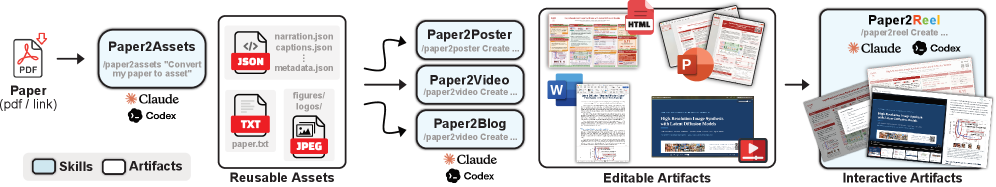
Figure 2: 파이프라인 전체. 하나의 Paper2Assets가 번들(bundle)을 만들고, 세 개의 제네레이터가 이걸 각자 소비한다.구성은 이렇다:
| 스킬 | 역할 |
|---|---|
| Paper2Assets | 논문 PDF를 한 번 읽어 공유 번들(전문, 그림, 캡션, 메타데이터, 9섹션 요약) 생성 |
| Paper2Poster | 번들을 받아 포스터 제작 (PowerPoint + PDF + PNG + HTML) |
| Paper2Video | 번들을 받아 발표 영상 제작 (PowerPoint 슬라이드 + MP4 + 자막) |
| Paper2Blog | 번들을 받아 이중언어 블로그 제작 (Word .docx) |
| Paper2Reel | 세 산출물을 하나의 인터랙티브 HTML 뷰어로 통합 |
핵심 설계 결정은 Paper2Assets 하나만 PDF를 열고, 나머지는 전부 이 번들을 소비한다는 것이다. 그림 정리(figure cleanup)도 여기서 한 번만 실행한다 — 결정론적 전처리(deterministic prefix)로 여백·캡션 잔여물을 자르고, 시각 AI가 타이트한 바운딩박스를 잡고, 서브에이전트 검증기가 원본과 대조해서 커밋 여부를 결정한다. 잘못 크롭된 그림이 있으면 Paper2Assets 한 곳에서 고치면 세 산출물 전부에 반영된다.
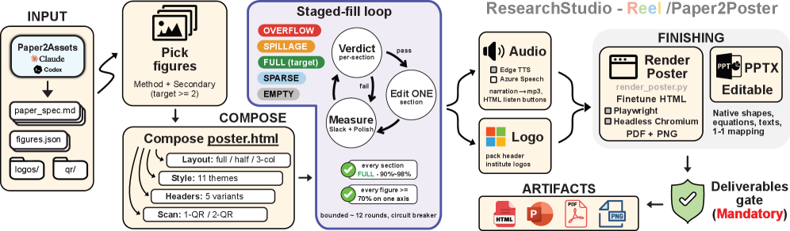
Figure 3: Paper2Poster 파이프라인. 번들을 받아 4축(컬럼, 비주얼 스타일, 헤더, Scan-to-Read)으로 포스터를 구성하고, 섹션별로 FULL(90-98%) 판정이 날 때까지 수정 루프를 돈다.”Measured-fill 루프” — 점수가 아니라 합격/불합격으로 끝낸다
G3(soft quality gate)를 어떻게 바꿨는지가 이 논문의 가장 흥미적인 디테일이다. 각 제네레이터는 measured-fill 루프를 돈다:
- 산출물의 각 섹션에 대해 카테고리컬 품질 평가(categorical quality verdict) 를 내린다 — FULL(90-98%) / slack / polish
- FULL가 아닌 섹션은 한 번에 하나씩 에이전트가 수정
- 모든 섹션이 FULL이면 합격(hard render gate), 아니면 다시 루프
“7.8점이니까 됐다”가 아니라, 빈 섹션이 있으면 무조건 불합격이다. 점수가 평단(plateau)에 도달해서 멈추는 게 아니라, 실제로 모든 패널이 채워졌는지 확인한다.
편집 가능한 산출물 — “왜 이게 안 됐나”
G2(one-way render)에 대한 답은 단순하다. 원래 도구가 쓰는 포맷 그대로 내보낸다.
- 포스터 → PowerPoint (.pptx) + PDF + PNG + HTML
- 영상 → PowerPoint 슬라이드 + MP4 (LibreOffice + ffmpeg로 변환)
- 블로그 → Word (.docx), 이중언어 (WeChat용 + 영문 리서치 블로그용)
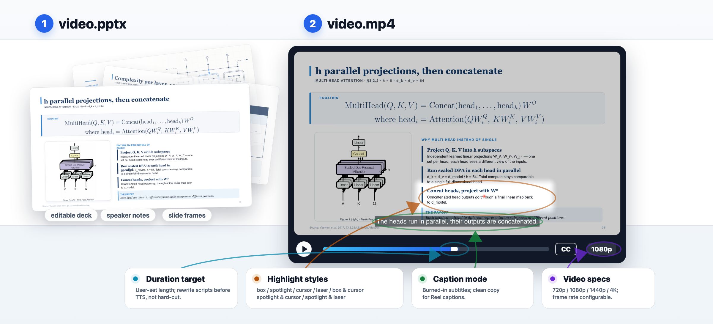
Paper2Video 산출물. 슬라이드, 자막, 하이라이트가 하나의 타임라인으로 정렬된다.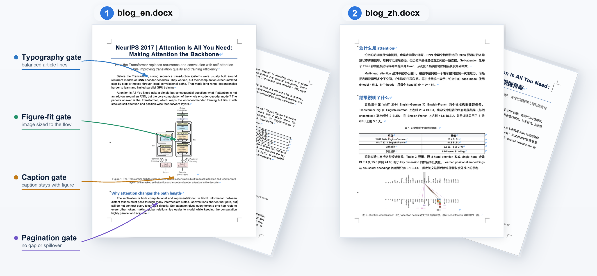
Paper2Blog 산출물. 중국어 WeChat 등록과 영문 리서치 블로그 등록 두 가지로 출력된다.블로그쪽에서 특히 인상적인 건 layout-aware DOCX repair다. Word 파일을 내보낼 때 페이지가 거의 비어있거나, 이미지가 너무 작거나, 고아尾巴(orphan tail)가 있으면 자동으로 잡아준다. 그냥 텍스트를 덤프하는 게 아니라 편집 도구에서 열었을 때 레이아웃이 무너지지 않도록 검증한다.
Paper2Reel — 세 산출물을 하나의 화면에
포스터, 영상, 블로그를 각각 따로 받아놓으면 결국 “이 세 개가 같은 논문에서 나왔는데 서로 어디가 연결되는지”를 사용자가 찾아야 한다.
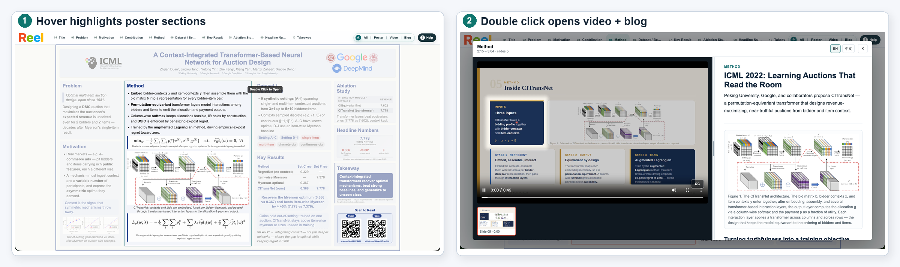
Paper2Reel 인터랙티브 뷰어. 섹션 클릭 시 영상, 슬라이드, 캡션, 블로그가 매칭되는 위치로 같이 이동한다.Paper2Reel은 이 세 가지를 하나의 self-contained HTML 뷰어에 바인딩한다. 섹션 레벨 클릭 한 번이 영상의 해당 구간, 슬라이드 썸네일, 자막, 블로그 해당 단락을 동시에 이동시킨다. 영상에서 포스터의 그림을 참조하거나, 블로그에서 영상의 특정 시점으로 점프하는 게 가능하다. 이게 가능한 이유는 애초에 세 산출물이 같은 section ID와 figure handle을 공유하기 때문이다.
결과: 포스터 벤치마크에서 원저자보다 높은 미학 점수
Paper2Poster 벤치마크 (논문 100편) 결과, ResearchStudio-Reel이 만든 포스터는:
- 모든 미학·정보 하위 기준에서 1위 (두 개의 held-out VLM judge 기준)
- 원저자가 직접 만든 포스터보다 미학 점수 ~0.6/5 높음 (3.52 vs 2.94)
- 전체 점수 기준 84-93%의 논문에서 승리
- Claude Code(claude-opus-4.8)를 Codex(gpt-5.5)로 바꿔도 미학 평균 3.36으로 여전히 모든 기존 시스템을 리드 — 즉 모델이 아니라 스킬 구조 자체의 효과라는 것
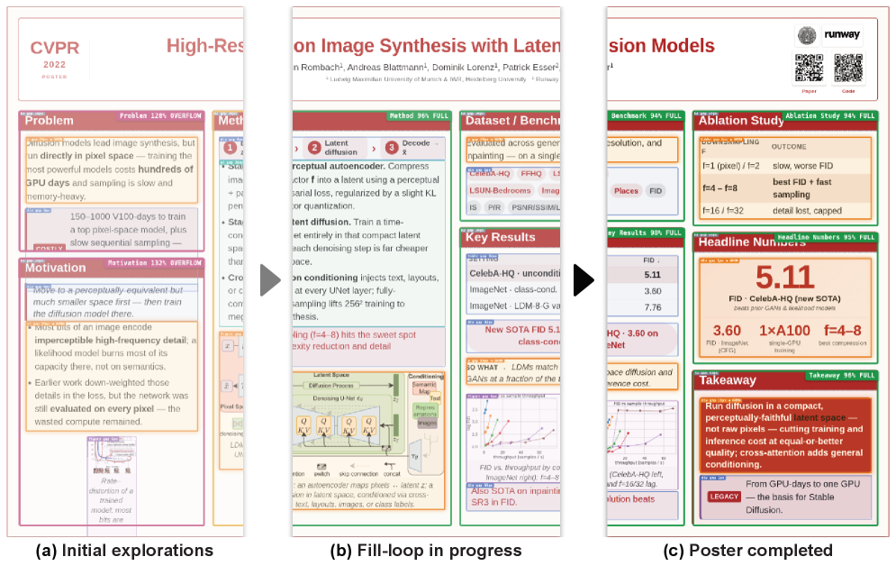
Figure 4: Paper2Poster 벤치마크 결과. 미학·정보 모든 하위 기준에서 기존 자동화 시스템과 single-shot frontier LLM을 상대로 전승.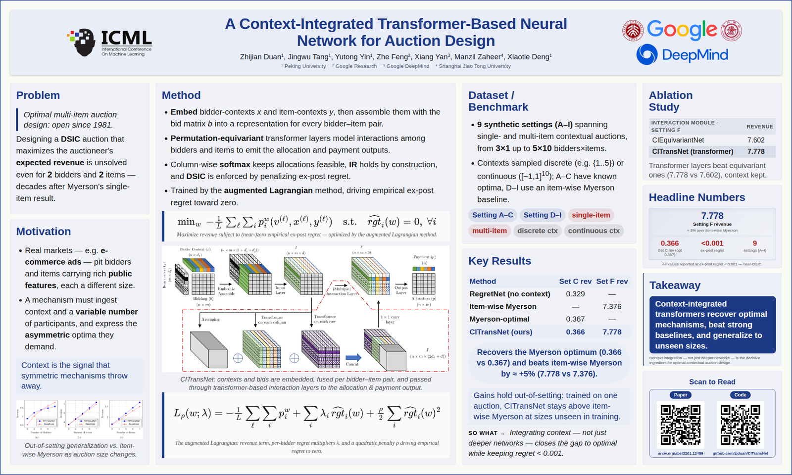
같은 논문으로 만든 포스터 비교 — ResearchStudio-Reel(ours).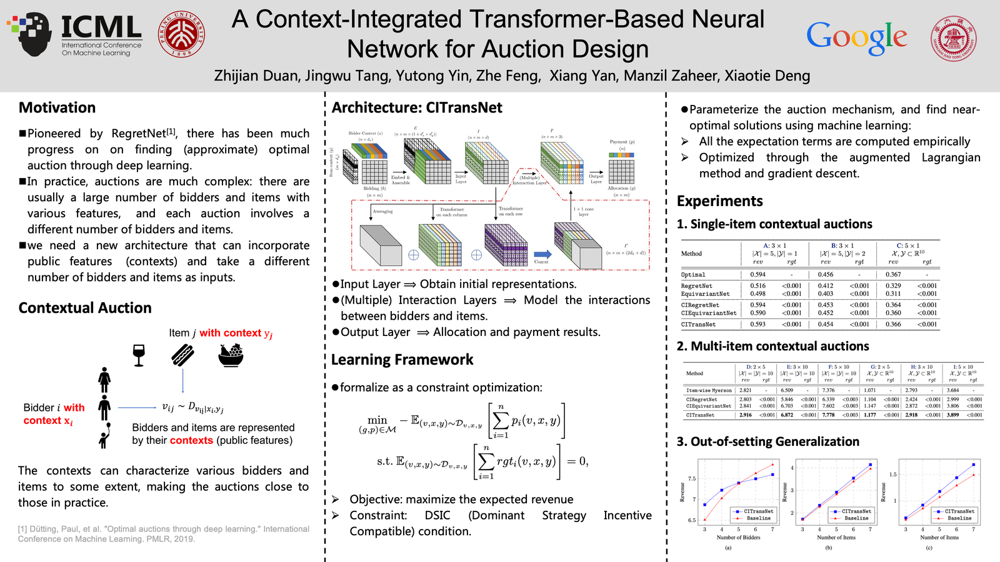
같은 논문의 원저자 포스터(ground truth).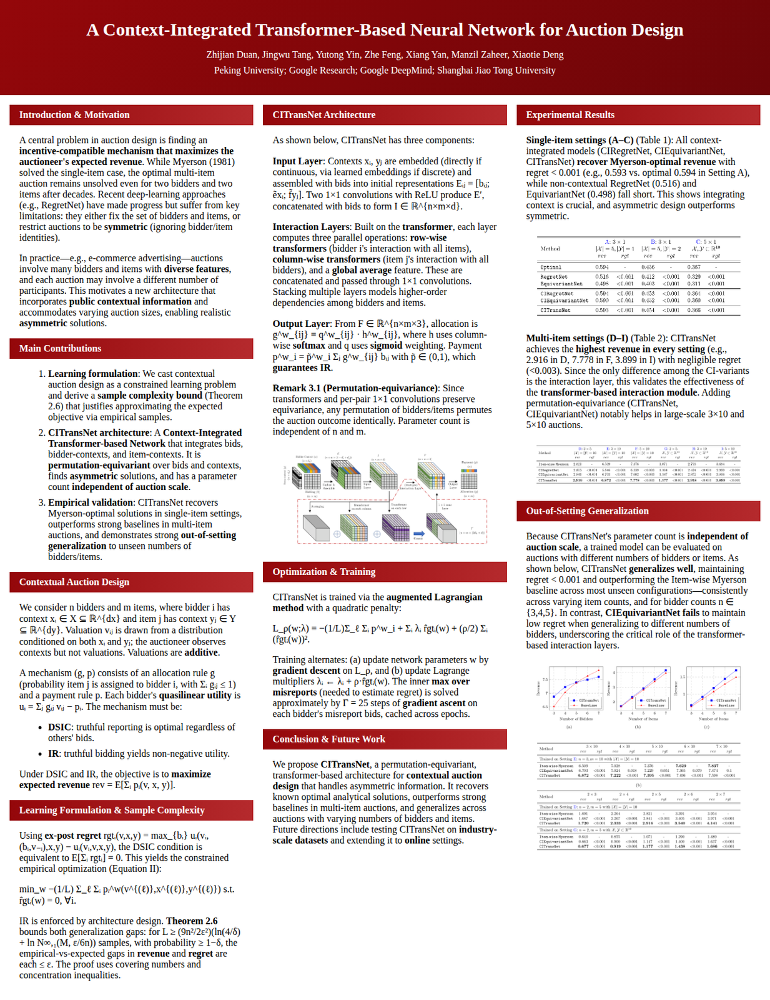
기존 P2P 시스템이 만든 포스터.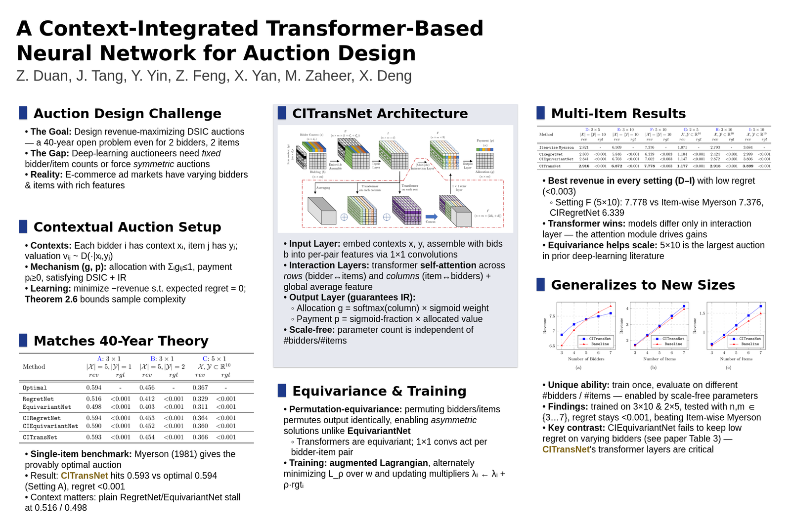
PosterGen이 만든 포스터.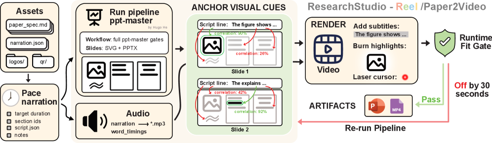
Figure 5: 섹션별 품질 분석. FULL 달성률과 slack 분포를 보여준다.왜 이 구조가 작동하는가 — 세 개의 수렴
저자들은 이 구성이 “지금 당장” 가능해진 배경으로 세 가지 수렴(convergence)을 든다:
- Claude Code / Codex 스킬 런타임의 성숙 — 에이전트 워크플로우를 안정적으로 돌릴 수 있는 계약(contract) 층이 생겼다
- 결정론적 프리미티브의 성숙 — headless Chromium(HTML→PDF), LibreOffice + ffmpeg(slides→video), python-docx(편집용 .docx)가 믿을 수 있는 수준이 됐다
- Edge TTS의 음질 향상 — 더 이상 음성 품질이 병목이 아니다
즉 “모델이 똑똑해져서”가 아니라, 에이전트가 안전하게 위임할 수 있는 도구층이 갖춰져서 이 구성이 tractable해졌다는 진단이다.
이 패턴이 연구자에게 의미하는 것
ResearchStudio-Reel의 핵심 통찰은 “더 좋은 단일 산출물을 만드는 게 아니라 **구성(composition)**으로 푼다”는 것이다. 하나의 추출을 세 개가 공유하고, 각각이 편집 가능한 포맷으로 나가고, 마지막에 하나로 엮이는 구조.
이 구조가 멈출 이유가 없다 — 결정론적 렌더와 카테고리컬 필트 판정이 있는 한, 어떤 디세미네이션 타겟이든 같은 패턴으로 확장할 수 있다.
논문 마지막 문장이 인상적이다. 남은 문제는 건축(architectural)이 아니라 **평가적(evaluative)·생성적(generative)**이라는 것 — 즉, 이미 “돌아가는 구조”는 완성됐고, 이제 얼마나 더 좋은 산출물을 만들 수 있느냐의 문제라는 진단이다.
연구자 입장에서 보면, accept 이후의 가장 피곤한 일주일을 에이전트에게 맡길 수 있는 구조적 기반이 나왔다. 포스터 디자인 고민, 영상 더빙 스크립트 작성, 블로그 번역 — 이 삼위일체를 한 번에 처리하면서 결과물이 서로 모순되지 않는다는 게 이 시스템의 진짜 가치다.
논문: arXiv:2607.04438 프로젝트 페이지: https://aka.ms/ResearchStudio